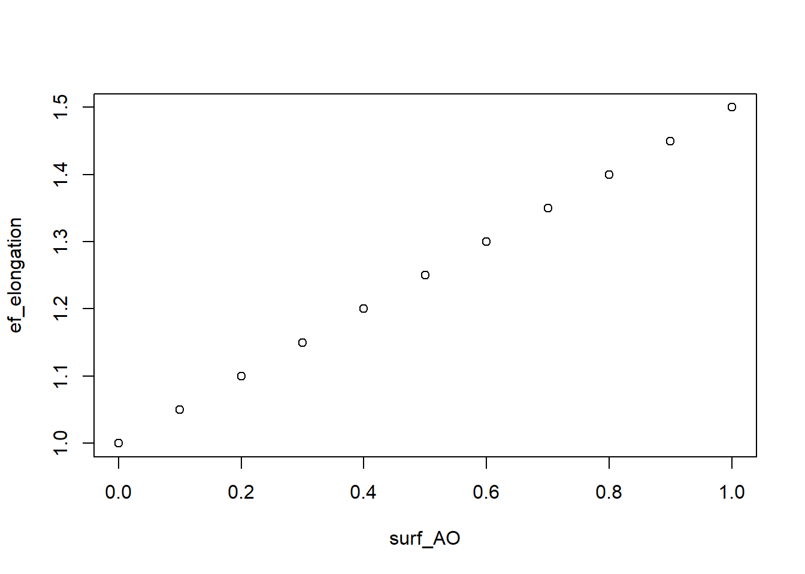

Chapter 16 Light competition effect
The competition between the plant species in intercropping was so much mixed between several computations that it became difficult to parameterize the models, or even to grasp the functionning of the model. We propose a brand new approach to clarify and simplify the computations, while including a new process in the model: the shoot elongation.
As explained in chapter 2, STICS considers two kinds of competitions for light: the intra-species competition, and the inter-species competition. The model computes a competition for light between both species using the light interception module, and a second competition using the plant density. Until now the density effect represented both intra and inter-species competition because it was computed using an “equivalent” density that increased with the difference in height between the plants (see 5). This equivalent plant density was difficult to explain, and difficult to parameterize because it was used to compute efdensite (the density effect) with the same equation than for a sole crop, where this density effect is only an intra-specific competition.
The model should simulate approximately the same results simulating a sole crop or the same crop twice in intercrop (we call it a self-intercrop). It was difficult make the model do it because the same equations were used for different purposes, so the parameterization of the model did not stand well.
We propose to remove the complicated computation of the equivalent density because the competition for light between the two plants is already considered in the light interception module. We argue that the density computation should only be used for the same purpose as for the sole crop (intra-specific competition) to correctly use the adens and bdens parameters that are parameterized for a sole crop. The equivalent density would be used only as a way to match the density in intercrop to the equivalent density it would have in the sole crop, i.e. densite*2 (densite: sowing density). The density effect (efdensite) would then only represent the intra-row competition, and the inter-row competition would be computed using the light interception module.
It would greatly simplify the processes involved in intercropping, reducing the number of parameters with a complex meaning : hauteur_threshold2, eqdens_max1, eqdens_max2 and code_calc_equi_density.
> P_hauteur_threshold is still needed to know when we consider the plants are starting to be in competition for light.
We also want to add another important process to the model: the elongation of the shoot with increasing shade. We propose to add a computation for the shoot elongation effect (called ef_elongation) that would be applied to increase the plant heigth with increasing shading. This computation adds only one parameter that represent the effect on plant heigth with the maximum shading. This parameter is called P_elongation.
The computation is as follow:
with surf_AO the relative surface of the plant that is shaded (0.0: full sun, 1.0: fully shaded), P_elongation the elongation effect when the plant is fully shaded (1.0 - n), and ef_elongation the resulting elongation effect that is applied to compute the plant heigth. ef_elongation linearly increases with increasing shading.
The following plot shows the elongation effect with P_elongation= 1.5 for an increasingly shaded plant.

The elongation effect is then applied to the computation of the heigth as follows:
By modifying our previous approach, we hope to simplify the computation of the competition for light between plants, and to integrate a potentially essential process that is shoot elongation. We can summarize the new approach as follows:
The intra-species competition is computed as it is in sole-crops using
efdensiteThe inter-species competition is computed using the light interception module
The plant elongation is also computed using the light interception module with the relative shaded surface of the plant as a proxy for light quality.